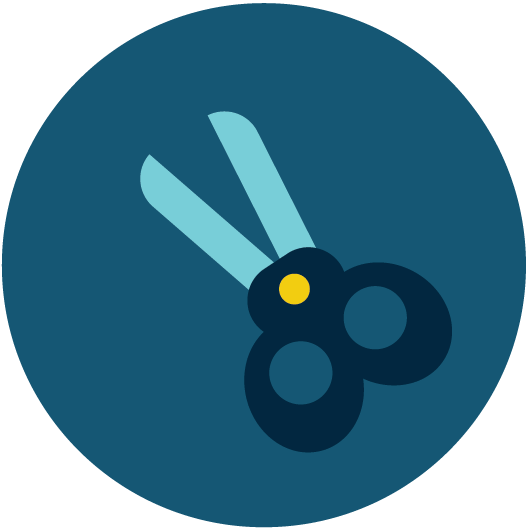

nodige spullen
Om een bijdrage te leveren heb je helemaal niet veel nodig:
- Een tas of zak om alles te verzamelen
- Als je het hebt een fancy grijpstok (scheelt weer bukken ;) maar je kan ook handschoenen aandoen
- Een goede dosis motivatie en een goeie playlist
ga op pad
Ja je hoort het goed, zo makkelijk is het. Stap je deur uit en speuren maar.
Als je wilt kun je ergens heen gaan maar de “change” is niet ver weg. Helaas ligt er overal afval ook op plekken waar het niet hoort. Loop een rondje door je buurt en verbaas je over wat je allemaal kunt vinden.
afval verzameld
Buit te pakken? En wat nu?
Je kan al het afval inleveren bij jouw gemeente, maar je kan het ook zelf recyclen. Voordat je dit doet is het echter wel belangrijk dat alles hygiënisch schoon is. Maak daarom een sopje aan en was de dingen die je wilt recyclen af.
inleveren bij gemeenterecyclen maar!
Laat je creatieve krachten los en ga lekker knutselen. Plastic is een super divers en makkelijk materiaal met veel potentie. Weet je niet zo goed waar je moet beginnen? Kijk dan hier voor inspiratie:
inspiratie